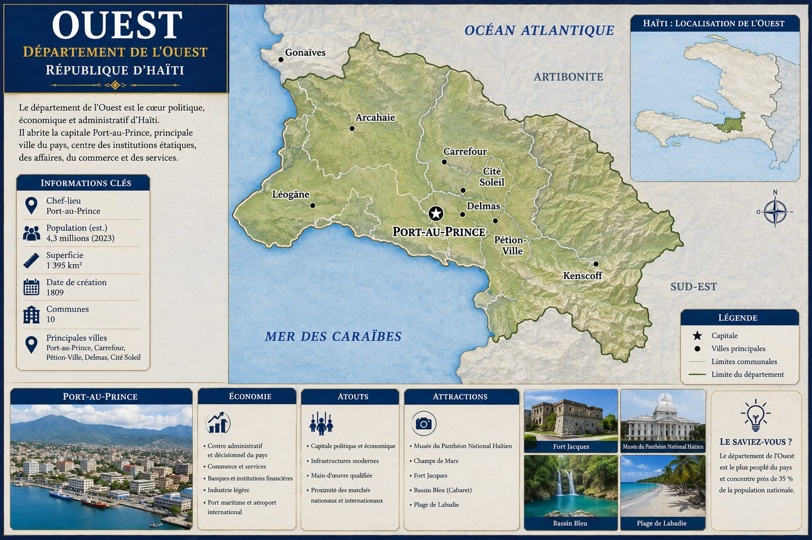

Le cœur politique, économique et administratif du pays — département le plus peuplé d'Haïti, il abrite Port-au-Prince, la capitale.

Fondée en 1749 sous la colonie française, Port-au-Prince devient rapidement un centre administratif majeur de Saint-Domingue, avant d'être consacrée capitale de la République d'Haïti après l'indépendance. Depuis, l'Ouest concentre l'essentiel des institutions centrales de l'État, des sièges d'entreprises et des services du pays — une centralisation historique qui explique à la fois son poids économique et la pression urbaine considérable qu'elle subit aujourd'hui.
Le département a aussi été l'épicentre du séisme du 12 janvier 2010, l'un des événements les plus marquants de l'histoire récente d'Haïti, dont les conséquences humaines et institutionnelles se font encore sentir.
Fort Jacques, le Musée du Panthéon National Haïtien, Bassin Bleu et la plage de Labadie témoignent d'un patrimoine historique et naturel riche, à côté du rôle strictement administratif du département.
Une concentration démographique et économique majeure, avec une pression forte sur le logement, les infrastructures et les services publics de l'aire métropolitaine.
Une exposition documentée au risque sismique, avec des enjeux de reconstruction et de normes de construction qui restent d'actualité depuis 2010.